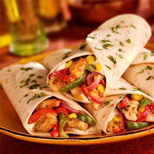

Fajitas

Easy grilled steak fajitas. Very delicious! You can add sour cream, tomatoes, or anything you like if you want to.
Ingredients
- 1 (1 1/4 pound) flank steak
- 1 tablespoon salt, divided
- 1 tablespoon ground black pepper, divided
- 2 limes
- 1/2 teaspoon chili powder
- 1 large green bell pepper, cut into strips
- 1 large red onion, cut into strips
- 1 pinch salt and ground black pepper to taste
- 1 (15 ounce) can black beans, rinsed and drained
- 1 serving olive oil cooking spray
- 1 (8 ounce) package shredded Mexican cheese blend
- 1 (10 ounce) package flour tortillas
Steps
- Coat both sides of the flank steak with 1 tablespoon each salt and pepper, pressing into the steak.
Place in a large freezer bag.
Cut both limes in half and squeeze juice into the bag; add chili powder.
Make sure all is mixed well and remove the air from the bag.
Place in a refrigerator and marinate for about 3 hours.
- Preheat an outdoor grill for medium-high heat and lightly oil the grate.
- Season bell pepper and red onion with salt and pepper. Place in a grill pan and set aside.
- Put black beans in a small pot on the stove over medium heat to heat through.
- Cook steak on the preheated grill until browned on one side, 5 to 7 minutes.
Spray vegetables with cooking spray and place them on the grill.
Cook until vegetables begin to caramelize, turning often so they don't burn,
and steak is beginning to firm and is hot and slightly pink in the center, 5 to 7 minutes.
An instant-read thermometer inserted into the center should read 140 degrees F (60 degrees C) for medium doneness.
Remove steak and vegetables from the grill.
- Slice steak into thin strips. Place beans, steak, vegetables, and Mexican cheese onto the tortillas and serve.